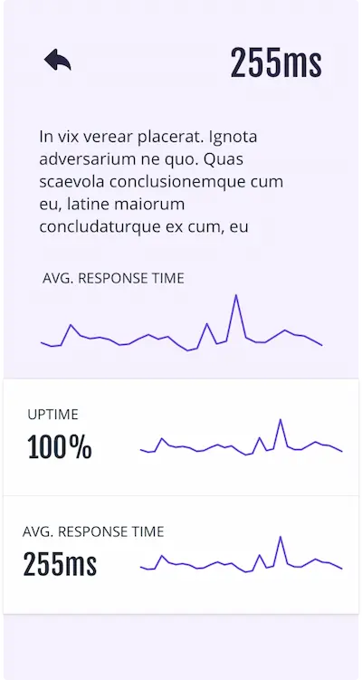
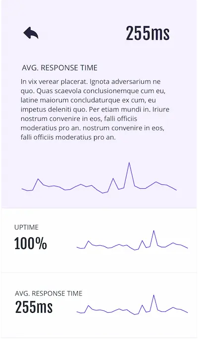

Oasis
Error tracking and monitor all your server status at all time. Prevent incidents and be efficient.
Download FromApp Store

works on phone and all devices
free status page for monitoring
easy integrations and setup
For some systems, latency and throughput are coupled entities. In
TCP/IP, latency can also directly affect throughput. In TCP
connections, the large bandwidth-delay product of high latency
connections, combined with relatively small TCP window sizes on many
devices, effectively causes the throughput of a high latency
connection to drop sharply with latency.
This can be remedied with various techniques, such as increasing the
TCP congestion window size, or more drastic solutions, such as
packet coalescing, TCP acceleration, and forward error correction,
all of which are commonly used for high latency satellite links.
Reliable Monitoring System
Health check on the latest selected time range
OK
The average ping up time of selected time range
95%
Average latency in the selected time range
19ms
Shows the average packet lost in selected time range
0.1
Error rate of bit transmission in selected time range
0.02%
Easy tracking of all Your stats
Throughput is controlled by available bandwidth, as well as the
available signal-to-noise ratio and hardware limitations. Throughput
for the purpose of this article will be understood to be measured
from the arrival of the first bit of data at the receiver, to
decouple the concept of throughput from the concept of latency.
Choice of an appropriate time window will often dominate
calculations of throughput.
Features of Oasis
TCP acceleration converts the TCP packets into a stream that is similar to UDP. Because of this, the TCP acceleration software must provide its own mechanisms to ensure the reliability of the link.
Performance issues such as throughput and end-to-end delay are also addressed.
Many systems can be characterized as dominated either by throughput limitations or by latency limitations in terms of end-user utility or experience.
In some cases, hard limits such as the speed of light present unique problems to such systems and nothing can be done to correct this.

Other systems allow for significant balancing and optimization for best user experience.
A telecom satellite in geosynchronous orbit imposes a path length of at least 71000 km between transmitter and receiver.
This delay can be very noticeable and affects satellite phone service regardless of available throughput capacity.
Stats on Oasis
These long path length considerations are exacerbated when communicating with space probes and other long-range targets beyond Earth's atmosphere.
A/B Split
A/B
Crash Rate
89%
Error reporting API - Uptime
100
General API
81rps
Data Access API
93%
Average Latency
1.98ms
Trusted by


What customers are saying
Ready to get started?
Sign up here and our representative will contact you shortly.